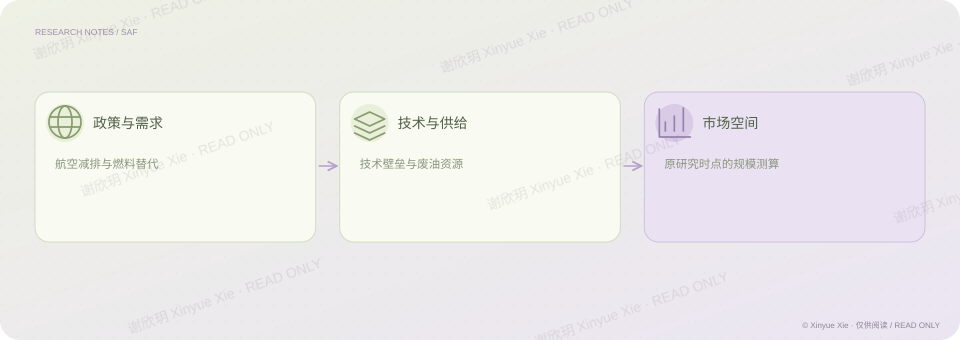

中信证券 · 研究经历
SAF：航空减排背后的产业机会
航空减排需求，怎样变成一门可实现的生意？
PROJECT NOTES / THE BIG PICTURE
研究思路

01核心判断
在可持续航空燃料研究中，我以欧盟对生物柴油加征关税的背景为起点，关注航空燃料的技术门槛、附加值与碳减排属性，并分析中国餐厨废油资源能够带来的供给条件。研究将政策推动的需求与产业实际供给连接起来，当时测算的 2030 年全球市场规模为 2266 亿元。这一测算属于原研究时点的判断；理解产业机会，仍需要同时看需求为什么增长，以及技术和原料能否支持供给。
02分析过程
以政策和下游需求变化界定研究问题。 结合技术门槛、产品价值和原料供给分析产业条件。 将政策、技术与原料条件连接到当时的市场规模测算。
相关经历中信证券 · 能源化工
理解商业
将政策、需求、技术门槛与原料供给放在一起分析。
检验证据
市场规模判断需要回到测算口径与供给条件。
谢欣玥 Xinyue Xie · 研究作品仅供在线阅读
← 返回全部作品